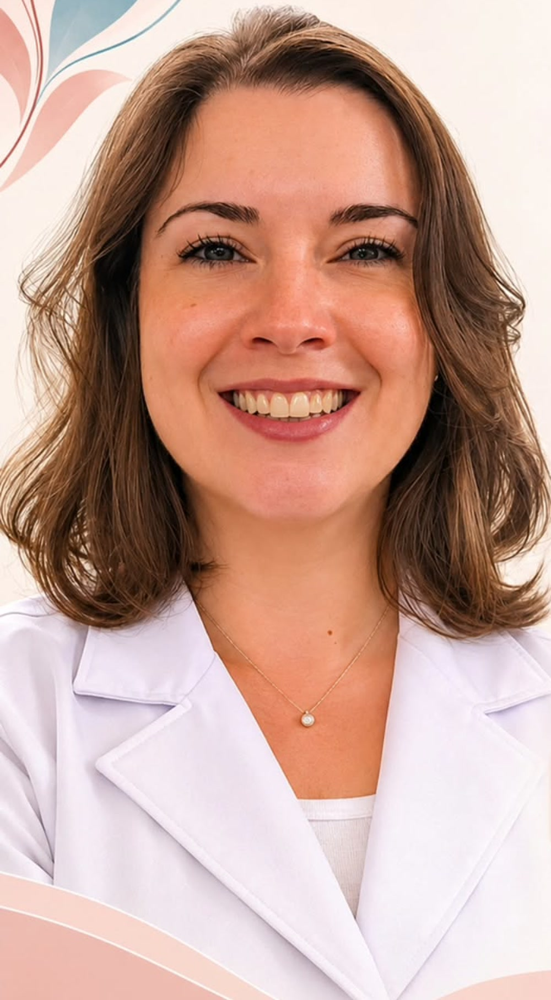

Dermatologia · Lauro de Freitas
Dra. Luana Maia Leite
CRM-BA 20509 · RQE 26150
Pele, cabelo e o corpo inteiro: dermatologia com olhar de clínica médica.
Atende na Clínica CLAM, em Vilas do Atlântico, em Lauro de Freitas. A consulta olha para a queixa da pele e para o que ela conta sobre a saúde como um todo.

Por onde começar
O que você quer entender hoje?
Escolha o assunto e leia com calma. Cada pele é avaliada no seu contexto, e a conduta é definida em consulta.
Vitiligo e manchas brancas
Nem toda mancha clara é vitiligo, e nem todo pano branco é fungo.
Ler sobre manchasPelePsoríase
Placas, descamação e o que a inflamação faz além da pele.
Ler sobre psoríaseCabeloQueda de cabelo
Tipos de queda, o que investigar e por que o tratamento muda.
Ler sobre quedaNa BahiaHTLV
O vírus de alta prevalência na Bahia e o que ele pode fazer na pele.
Ler sobre HTLVO cuidado
A pele pede uma visão do todo.
Mancha, queda de cabelo e unha alterada raramente são só vaidade: muitas vezes são a primeira pista de algo que vale investigar no corpo.
As camadas da pele acompanham o que acontece por dentro: hormônio, imunidade, metabolismo e sono aparecem no exame.
Quando começou, o que piora, o que já foi tentado e o que mais está acontecendo.
A consultaPele, couro cabeludo, unhas e mucosas, com luz e, quando ajuda, dermatoscopia.
A consultaExames de sangue e biópsia entram só quando ajudam a responder à pergunta.
ManchasO que fazer agora, o que observar em casa e quando voltar.
A consultaTambém na consulta
Temas que ela acompanha.
A lista vem do que a Dra. Luana publica e atende. Serve para você se localizar, não para fechar diagnóstico.
- TratamentoAcne
Da acne leve à indicação de tratamento oral, com acompanhamento.
- InfecçãoHerpes-zóster
Dor, bolhas em faixa e o risco de neuralgia depois das lesões.
- PrevençãoMelanoma
O ABCDE das pintas e quando uma lesão pede avaliação.
- Couro cabeludoCabelo e unhas
Queda, unha alterada e o que investigar antes de tratar.
- ClínicaSaúde do homem
Novembro Azul, check-up e o cuidado que vai além do exame.
Alguns temas aparecem em campanhas de saúde, como diabetes, infecções em idosos e estresse. Eles também influenciam a pele e entram na conversa.
Consultório
Clínica CLAM, em Vilas do Atlântico.
R. Itagi, 590, em Pitangueiras, na faixa litorânea de Lauro de Freitas. Atendimento com hora marcada; o agendamento é feito pelo telefone do consultório.
R. Itagi, 590 · Pitangueiras · Lauro de Freitas – BA
Como chegarLigue para o consultório: (71) 98894-7262. O agendamento é feito pela recepção.
Dúvidas frequentes
Perguntas comuns
Como marco a consulta?
Pelo telefone do consultório, (71) 98894-7262. O agendamento é feito pela recepção.
A Dra. Luana atende convênio?
As formas de atendimento são confirmadas pela recepção no momento do agendamento.
O que levar na primeira consulta?
Exames recentes, a lista de remédios e cosméticos em uso e, se tiver, fotos das lesões em datas diferentes. Isso ajuda a entender a evolução.
Preciso de encaminhamento?
Para a consulta particular, não é obrigatório. Se o atendimento for por convênio, a recepção confirma se o plano exige encaminhamento. Se você já é acompanhada por outro profissional, os relatórios ajudam na avaliação.
A consulta já fecha o diagnóstico?
Quando o diagnóstico é possível, ele é construído com a história, o exame e, se necessário, exames complementares. Nem toda queixa se resolve na primeira consulta.
Quando devo procurar o pronto-socorro?
Em emergência — falta de ar, febre alta com queda do estado geral, dor intensa ou reação grave a medicamento — procure o serviço de urgência mais próximo ou ligue 192 (SAMU).
Agende
Dermatologia com olhar para o corpo inteiro.
Clínica CLAM, R. Itagi, 590, Pitangueiras, Lauro de Freitas. Ligue para o consultório: (71) 98894-7262.